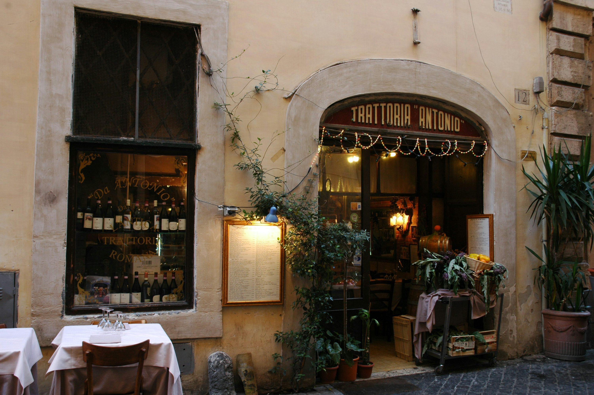
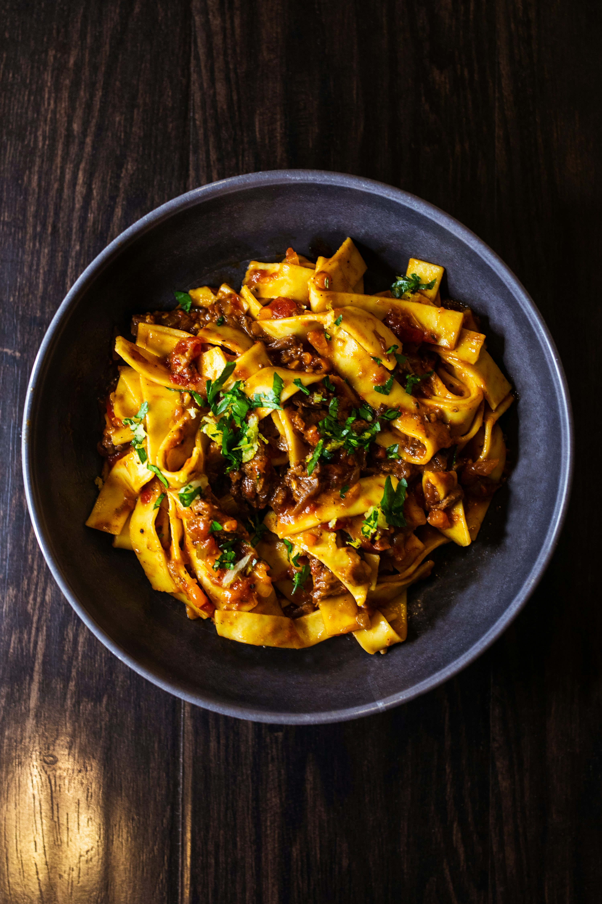
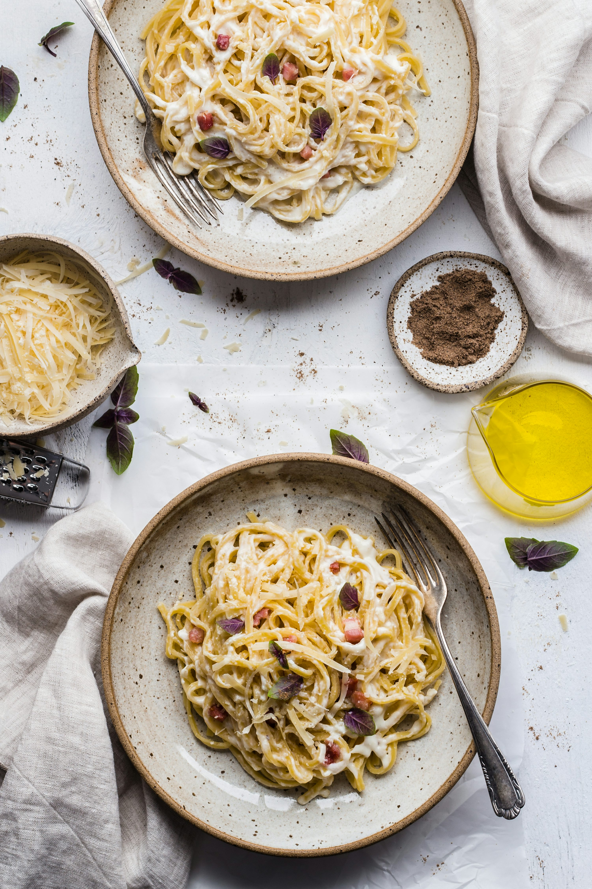

Uma celebração da autêntica culinária italiana no coração da Rua Avanhandava.
Conheça Nossa CasaO Restaurante Temperança Ltda, mundialmente conhecido como Famiglia Mancini, é um marco da gastronomia paulistana. Localizado na charmosa Rua Avanhandava, oferecemos uma experiência que vai além do paladar.
Nossa casa é decorada com memórias e paixão, servindo pratos generosos que reúnem famílias e amigos em torno de receitas clássicas preparadas com os melhores ingredientes.


Receitas exclusivas passadas de geração em geração, preparadas diariamente em nossa cozinha.

O segredo do nosso sabor está no tempo e no carinho dedicado a cada molho apurado lentamente.